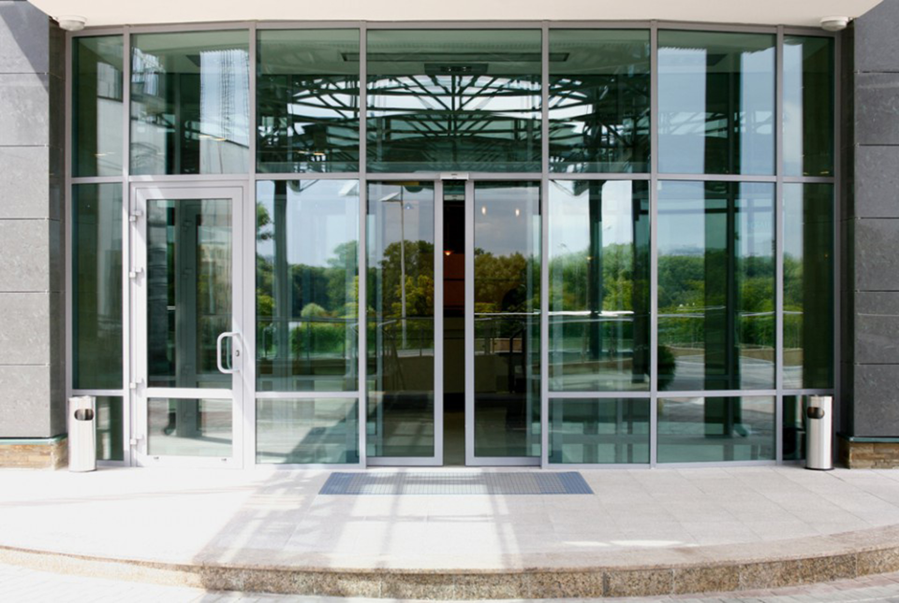
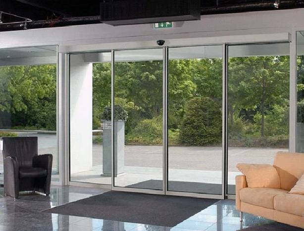
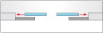
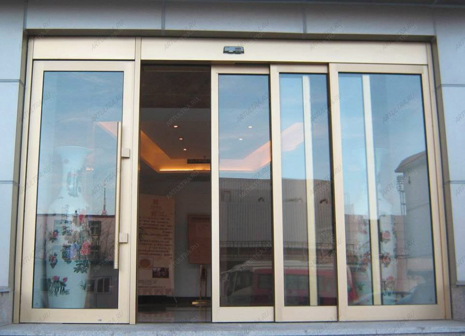
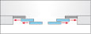
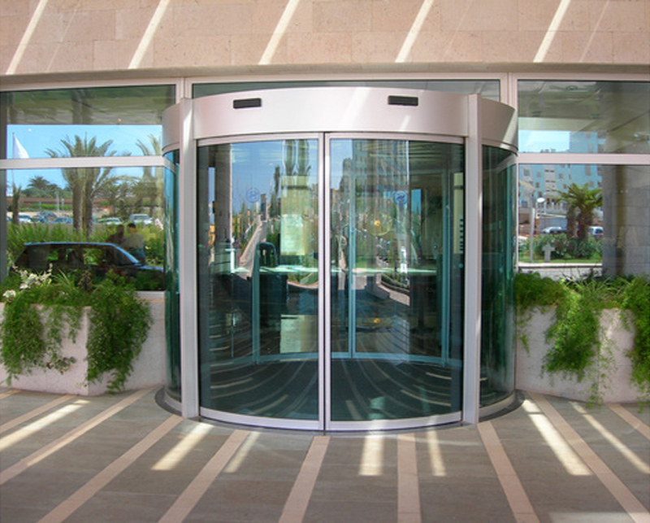
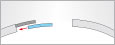
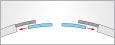

Автоматичні двері широко використовуються у приміщеннях із великим потоком людей. Це може бути торговий центр, аеропорт, станція, офісні центри і т.д. Встановлюючи двері такого роду в будинках, в яких протягом дня проходить велика кількість людей, традиційно хочуть досягти 2 цілей:
Для цих завдань існує 5 підвидів автоматичних дверей: плоскі, телескопічні, радіуси, кутові, багатофункціональні. Давайте розберемося, що являє собою кожен з цих видів.

Плоскі двері – це класика спектру автоматичних розсувних дверей. Вони ідеально підходять для установки в будь-якому місці, де є достатньо простору для їхнього відкривання. Установка таких дверей дозволяє автоматизувати вхід просто та елегантно. Дверні стулки відкриваються у напрямку від відвідувачів, що значно підвищує рівень безпеки.
Спеціальні області застосування
Додаткові функції

Варіанти відкриттів
Двері (ширина проходу 800-2000 мм)
Двостулкові двері (ширина проходу 1100-3000 мм)


Варіанти відкриттів
Двері (ширина проходу 700-3800 мм)
Двостулкові двері (ширина проходу 1400-3800 мм)

Телескопічні розсувні двері використовуються переважно у випадках, коли необхідно забезпечити максимальну ширину відкривання при обмеженому прорізі.
Спеціальні області застосування
Радіусні розсувні двері покликані підкреслити особливі форми в архітектурі і з першого погляду акцентують увагу відвідувачів на стилі та формі. Вся вхідна група завдяки радіусним дверям пропускає на 40% більше світла в порівнянні з плоскими розсувними дверима.
Спеціальні області застосування

Варіанти відкриттів
Двері (ширина проходу 800-2000 мм)

Двостулкові двері (ширина проходу 1100-3000 мм)

Кутові розсувні двері – це ідеальне рішення для оптичної виразності сучасної будівлі. Кут може бути спрямований усередину будівлі або назовні, так чи інакше, за допомогою кутових розсувних дверей Ви зможете створити надзвичайно елегантну та привабливу вхідну групу.
Спеціальні області застосування
Як видно з назви, багатофункціональні розсувні двері покликані виконувати цілий ряд завдань. Кожні автоматичні двері приваблюють перехожих та відвідувачів своєю надзвичайною зручністю. В екстрених випадках або у разі великого потоку відвідувачів (наприклад, під час концерту), двері швидко та надійно забезпечують вільний прохід завдяки функції «Антипаніка». Можливо також закрити окремі дверні стулки для захисту від небажаних відвідувачів.
Спеціальні області застосування
Всі дверні стулки автоматичних евакуаційних дверей можуть бути відкриті вручну з будь-якого положення, тим самим миттєво забезпечуючи максимальну ширину проходу для евакуації. Поряд із стандартними функціями безпеки, передбачені додаткові захисні заходи, наприклад, технологічні зазори, продиктовані вимогами безпеки, або закруглений переріз профілів - для запобігання защемленню пальців у дверях. Якщо всі дверні стулки повністю відкриті і зсунуті до країв отвору, ширина проходу досягає 95 відсотків від загальної ширини отвору, що було б можливе лише у разі відсутності дверей як такої.
Протизламні двері - це автоматичні розсувні двері, що забезпечують максимальний захист від злому та вандалізму. У цих дверях Мі передбачили спеціальні конструктивні особливості, ось лише деякі з них: найжорстокіша система алюмінієвих профілів, ущільнювачі зі спеціального матеріалу з клиноподібною формою, спеціально розроблена концепція болтових з'єднань. І, зрозуміло, протиударні двері забезпечують повний комфорт та звичну функціональність автоматичних розсувних дверей.
Розглянувши кожен вид автоматичних дверей, можна сказати, що це надійне рішення для вхідної групи, де є великий потік людей. Ми пропонуємо замовити встановлення автоматичних дверей у нас, і Ви отримаєте високу якість конструкції, яка виконуватиме свої завдання на всі 100%.